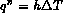
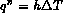
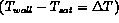

When a liquid is in contact with a surface maintained at a temperature above the saturation temperature of the liquid, boiling will eventually occur at that liquid-solid interface. Conventionally, based on the relative bulk motion of the body of a liquid to the heating surface, the boiling is divided into two categories; pool boiling and convective boiling.
Pool boiling is the process in which the heating surface is submerged in a large body of stagnant liquid. The relative motion of the vapor produced and the surrounding liquid near the heating surface is due primarily to the buoyancy effect of the vapor. Nevertheless, the body of the liquid as a whole is essentially at rest. Though the study on the boiling process can be traced back to as early as the eighteen century (the observation of the vapor film in the boiling of liquid over the heating surface by Leiden in 1756), the extensive study on the effect of the very large difference in the temperature of the heating surface and the liquid,  , was first done by Nukiyama (1934). However, it was the experiment by Farber and Scorah (1948) that gave the complete picture of the heat transfer rate in the pool boiling process as a function of
, was first done by Nukiyama (1934). However, it was the experiment by Farber and Scorah (1948) that gave the complete picture of the heat transfer rate in the pool boiling process as a function of  . Applying the Newton's law of cooling,  , the heat transfer coefficient, h, was used to characterize the pool boiling process over a range of
. Applying the Newton's law of cooling,  , the heat transfer coefficient, h, was used to characterize the pool boiling process over a range of  by Farber and Scorah as illustrated by the boiling curve in Figure 5.1.
by Farber and Scorah as illustrated by the boiling curve in Figure 5.1.
Farber and Scorah conducted their experiments by heating the water at various pressures with a heated cylindrical wire submerged horizontally under the water level. From the results, they divided the boiling curve into 6 regions based on the observable patterns of vapor production. Region I,  is so small that the vapor is produced by the evaporation of the liquid into gas nuclei on the exposed surface of the liquid. Region II,
is so small that the vapor is produced by the evaporation of the liquid into gas nuclei on the exposed surface of the liquid. Region II,  is large enough that additional small bubbles are produced along the heating surface but later condense in the region above the superheated liquid. Region III,
is large enough that additional small bubbles are produced along the heating surface but later condense in the region above the superheated liquid. Region III,  is enough to sustain "nucleate boiling", with the creation of the bubbles such that they depart and rise through the liquid regardless of the condensation rate. Region IV, an unstable film of vapor was formed over the heating surface, and oscillates due to the variable presence of the film. In this region, the heat transfer rate decreases due to the increased presence of the vapor film. Region V, the film becomes stable and the heat transfer rate reaches a minimum point. In Region VI, the
is enough to sustain "nucleate boiling", with the creation of the bubbles such that they depart and rise through the liquid regardless of the condensation rate. Region IV, an unstable film of vapor was formed over the heating surface, and oscillates due to the variable presence of the film. In this region, the heat transfer rate decreases due to the increased presence of the vapor film. Region V, the film becomes stable and the heat transfer rate reaches a minimum point. In Region VI, the  is very large, and "film boiling" is stable such that the radiation through the film becomes significant and thus increases the heat transfer rate with the increasing
is very large, and "film boiling" is stable such that the radiation through the film becomes significant and thus increases the heat transfer rate with the increasing  .
.
This behavior as described above occurred when the temperature of the wire was the controlled parameter,  . If the power is the controlled variable then the increase in the power (or heat flux, q") in Region III results in a jump in the wire surface temperature to a point in Region VI, (Figure 5.2). This point of transition is known as the critical heat flux and occurs due to hydrodynamic fluid instabilities as discussed later. This results in the stable vapor film being formed, and the wire surface temperature increases as the heat transfer resistance increases for a fixed input power. If the power is now decreased, the vapor film remains stable in Region VI and the  decreases to the minimum point for film boiling within Region V. At this point the vapor film becomes unstable and it collapses, with "nucleate boiling" becoming the mode of energy transfer. Thus, one passes quickly through Region IV and III to a lower wire surface temperature. This "hysteresis" behavior is always seen when the power (or heat flux) is the controlled parameter.
decreases to the minimum point for film boiling within Region V. At this point the vapor film becomes unstable and it collapses, with "nucleate boiling" becoming the mode of energy transfer. Thus, one passes quickly through Region IV and III to a lower wire surface temperature. This "hysteresis" behavior is always seen when the power (or heat flux) is the controlled parameter.
On the effect of the pressure, Farber and Scorah suggested that increasing the pressure, for the same temperature difference, would result in the decreasing of the size of the bubbles. At the same time, the film becomes thinner and less circulation would be observed. This effect is counter balanced by the increased density of the vapor and the attendant increase in its enthalpy. Thus, the increase in pressure initially increased the heat transfer rate in pool boiling. The objective of this section is to present an overall picture of the pool boiling process with an emphasis on the practical models used (1) to identify the transition between natural convection and nucleate boiling, as well as nucleate and film boiling, and (2) to estimate the heat flux during nucleate and film boiling given the difference between the heater surface temperature and the bulk liquid. First, we consider the process of bubble nucleation and then begin to "construct" the conceptual picture of the pool boiling curve with suggested quantitative models.